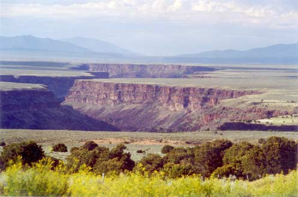

Relax
for a moment, on us . . .
Gaze
into this picture and listen
to the beautiful music . . .
(Click on music below)
|

| ||||||||
Home Products
Phone/Fax Orders Public
Service Opinion
Humor Satire
Songs Other Services Links Contact
Us
| (www.BlueCanyonProductions.com) "Santa Fe's —and therefore the world's—strangest web site. Fascinating sound clips and soul-nourishing content." - Bill Hutchison, staff writer, Santa Fe Reporter (See our Home Page) |
Public service message for “free lance creatives”
When submitting a public service message idea to the New Mexico Department of Transportation, please follow these simple guidelines: DON’T DO IT!!!
Take it from me, a guy with a fairly good public record of creative work (including the VERY long-running “Toss No Mas” jingle. I submitted an idea which arguably, years later, resulted in the popular NMDOT “Don’t Text” video, “DNTXT: Deadly Conversation”. (https://www.youtube.com/watch?v=uwta1bxyLGw )When I made the Department aware of my earlier submission, and gently suggested they pay me what I had requested as a creative fee in the first place, they politely declined, based on technicalities**, while not actually denying that my idea may have likely resulted in the current campaign.
This is the highly principled, morality-in-government, “do the right thing” Martinez administration, by the way. So, until further notice, and until they decide to do the right thing, my suggested guideline for submitting ideas remains: DON’T DO IT!
- Jim Terr 2014 / email bluecanyon2 – at – juno – dot – com** and asking ME – legal expert that I am not – if I can let them know of any statutes contradicting the technicality they cited!!